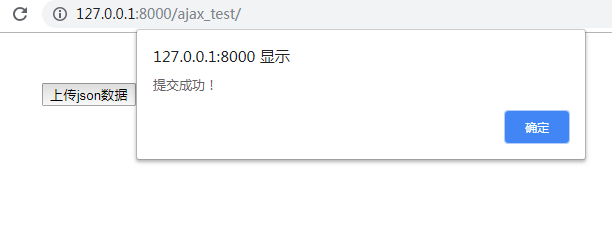
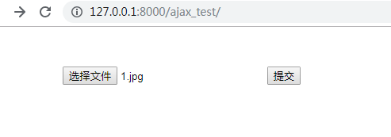
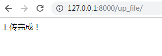
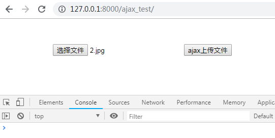
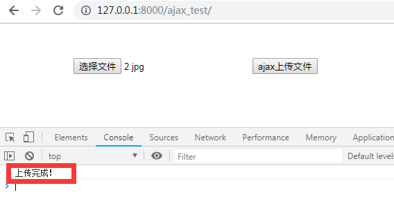

AJAX即“Asynchronous JavaScript and XML”（异步的JavaScript与XML技术），指的是一套综合了多项技术的浏览器端网页开发技术。Ajax的概念由杰西·詹姆士·贾瑞特所提出。
传统的Web应用允许用户端填写表单（form），当提交表单时就向网页服务器发送一个请求。服务器接收并处理传来的表单，然后送回一个新的网页，但这个做法浪费了许多带宽，因为在前后两个页面中的大部分HTML码往往是相同的。由于每次应用的沟通都需要向服务器发送请求，应用的回应时间依赖于服务器的回应时间。这导致了用户界面的回应比本机应用慢得多。
与此不同，AJAX应用可以仅向服务器发送并取回必须的数据，并在客户端采用JavaScript处理来自服务器的回应。因为在服务器和浏览器之间交换的数据大量减少，服务器回应更快了。同时，很多的处理工作可以在发出请求的客户端机器上完成，因此Web服务器的负荷也减少了。
path('ajax_test/', views.ajax_test),
def ajax_test(request):
if request.method == "GET":
return render(request, 'ajax_test.html')
else:
username = request.POST.get("username")
password = request.POST.get("password")
print(username, password)
data = username + " " + password
return HttpResponse(data)<head>
<meta charset="UTF-8">
<title>Title</title>
<script src="https://cdn.bootcss.com/jquery/3.3.1/jquery.min.js"></script>
</head>
<body>
{% csrf_token %}
<p>
<input type="text" class="user" placeholder="用户名">
</p>
<p>
<input type="password" class="pwd" placeholder="密码">
</p>
<button id="ajax_test">Ajax提交</button>
<script>
$("#ajax_test").click(function () {
let user = $(".user").val();
let pwd = $(".pwd").val();
$.ajax({
url: "/ajax_test/",
type: "POST",
data: {
username: user, password: pwd,
csrfmiddlewaretoken: $("[name='csrfmiddlewaretoken']").val()
},
success: function (data) {
alert(data)
}
})
})
</script>
path('up_json/', views.up_json),
def up_json(request):
import json
data = json.loads(request.body.decode("utf-8"))
print(data, type(data))
return HttpResponse("提交成功")<div style="margin-left: 100px;margin-top: 50px;">
<button class="up_btn">上传json数据</button>
</div>
<script>
$(".up_btn").click(function () {
$.ajax({
url: "/up_json/",
type: "POST",
contentType: "json",
header: {"X-CSRFToken": $("[name='csrfmiddlewaretoken']").val()},
data: JSON.stringify({
k1:"abc",
k2:"xyz",
k3: "v3",
}),
success: function (data) {
console.log(data);
alert(data);
}
})
})
</script>点击“上传json数据”

path('up_file/', views.up_file),
def up_file(request):
import os
if request.method == "POST":
file_obj = request.FILES.get("file_name")
name = file_obj.name
with open(os.path.join("media", name), 'wb') as f:
for block in file_obj:
f.write(block)
return HttpResponse("上传完成！") <form action="/up_file/" method="post" enctype="multipart/form-data">
{% csrf_token %}
<input type="file" name="file_name">
<input type="submit">
</form> 选择文件 1.jpg，并点击提交


path('ajax_up_file/', views.ajax_up_file),
def ajax_up_file(request):
import os
if request.method == "POST":
file_obj = request.FILES.get("file_name")
name = file_obj.name
with open(os.path.join("media", name), 'wb') as f:
for block in file_obj:
f.write(block)
return HttpResponse("上传完成！") <form action="/ajax_up_file/" enctype="multipart/form-data">
{% csrf_token %}
<input type="file" class="file_name">
{# 不能用submit属性#}
<input type="button" class="ajax_up_file" value="ajax上传文件">
</form>
<script>
$(".ajax_up_file").click(function () {
let formdata = new FormData();
formdata.append("csrfmiddlewaretoken", $("[name='csrfmiddlewaretoken']").val());
formdata.append('file_name', $(".file_name")[0].files[0]);
$.ajax({
url: "/ajax_up_file/",
type: "POST",
processData: false,
contentType: false,
data: formdata,
success: function (data) {
console.log(data);
}
})
})
</script>选择文件 2.jpg

点击ajax上传文件

基本操作到此结束！